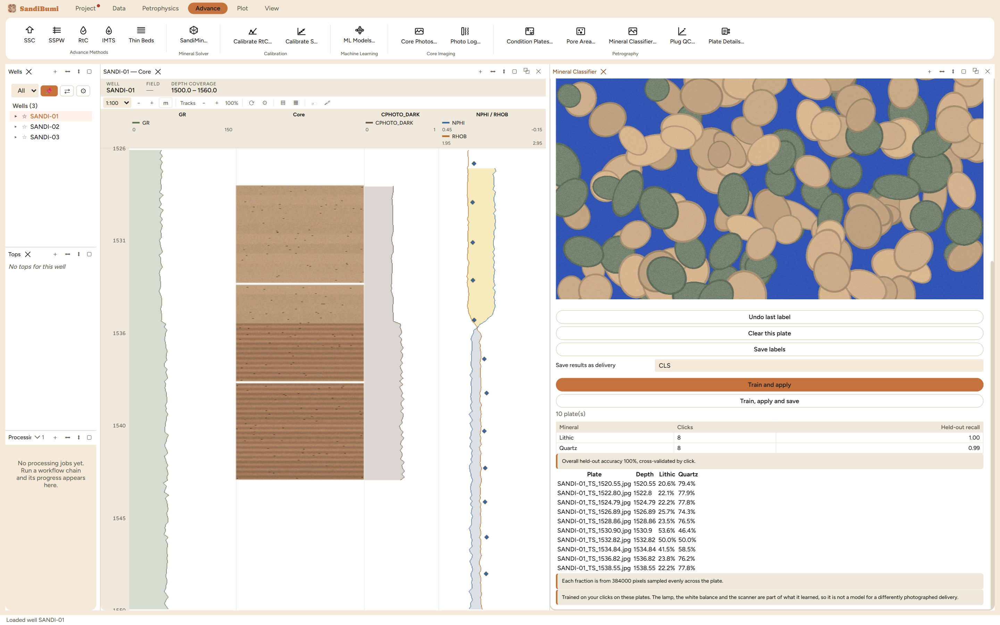

The Mineral Classifier is point counting turned into training data:
you click on the plate and name what is under the pointer, a
random-forest model is fitted to those clicks – colour plus local
texture – and applied to the whole delivery. Nothing ships
pre-trained, deliberately: a model trained on somebody else's sections
under somebody else's lamp would produce numbers with the shape of a
modal analysis and none of the content. Reach for it for mineral pairs a
plain colour rule cannot separate, like quartz against lithic
fragments.
The pane

Sixteen clicks on one plate – eight quartz, eight
lithic – then trained and applied: held-out recall 1.00 and
0.99, fractions on every plate of the delivery, and the two
green-cast plates reading twice their true lithic content because
the lamp travelled into the model.
Add minerals, then click. Each class is a chip carrying its
click count; the filmstrip tiles count their labels too, so "which
plates have I already counted" is visible at a glance.
The labels are the artefact, not the model. Clicks persist
with the delivery and the forest is refitted from them, seeded, on
every run; a list of clicks can be read, argued with and corrected,
where a stored model blob can be none of those.
Two refusals fire before anything trains. One class is not a
classification, and a class that cannot have clicks held out cannot
be scored – both were driven on the example:
the classifier needs at least two minerals labelled, and this run has one. A classifier
with a single class has nothing to decide, so its 100% is a number about nothing.
'Lithic' has 2 click(s); every mineral needs at least 3 before the model can be checked
on clicks it has not seen
Step by step
Open Advance ▸ Petrography ▸ Mineral
Classifier…, type a mineral name, Add mineral,
repeat, then click examples of each on the plate – the way you
would move a stage and call what is under the crosshair.
Train and apply, and read the held-out recalls before
believing any fraction: cross-validation groups by click, so the
score comes from clicks the model never saw.
Train, apply and save stores the fractions as a named
delivery (items prefixed CLS_, at each plate's depth).
Reading the result
The example separates cleanly where it should – recalls 1.00
and 0.99 over 16 clicks, per-plate fractions from 384,000 evenly sampled
pixels – and fails exactly where its own caveat says it must. The
model was trained on one normally lit plate; on the two plates
photographed under a green-cast lamp it calls half the rock lithic
(53.6% and 50.0% against roughly 30% everywhere else), because under
that lamp quartz photographs the way lithics do under the training
lamp. The pane's closing line is not boilerplate:
Trained on your clicks on these plates. The lamp, the white balance and the scanner are
part of what it learned, so it is not a model for a differently photographed delivery.
Note the naming: these items are CLS_QUARTZ and CLS_LITHIC,
deliberately distinct from the MIN_ items a published stain rule
produces – a fraction from your clicks and a fraction from a
documented stain identification are different claims, and one name would
leave a report unable to say which it quoted.
QC and pitfalls
Watch the per-class recalls, not the overall number. An
overall 0.9 sits comfortably on top of one mineral the model cannot
see at all; a weak class is named and its fraction is noise wearing
a percentage sign.
Label across the lighting. If a delivery spans lamps, click
examples on plates from each session, or classify the sessions
separately – the example's cast plates show what happens
otherwise.
Saving supersedes. A classifier delivery saved into the same
dataset as an earlier petrography run becomes the live delivery of
that dataset; switch between them in Data Sets… rather than
wondering where the other one went.